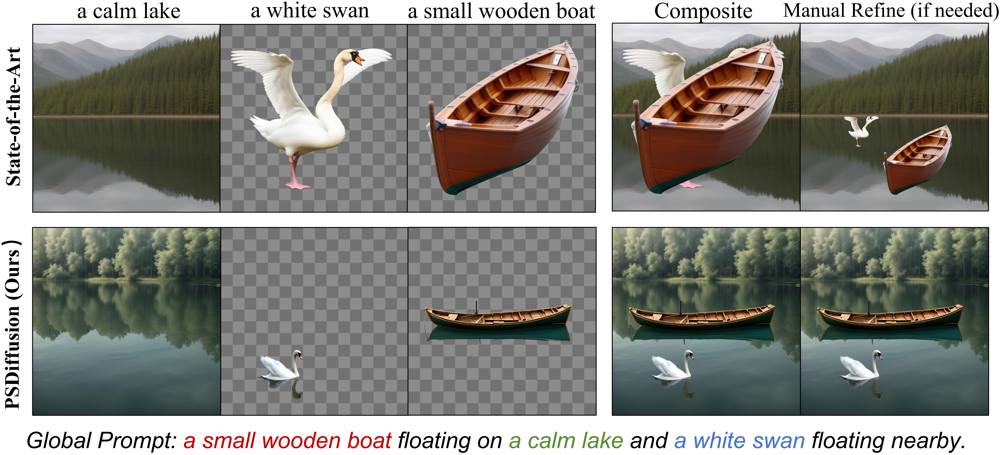
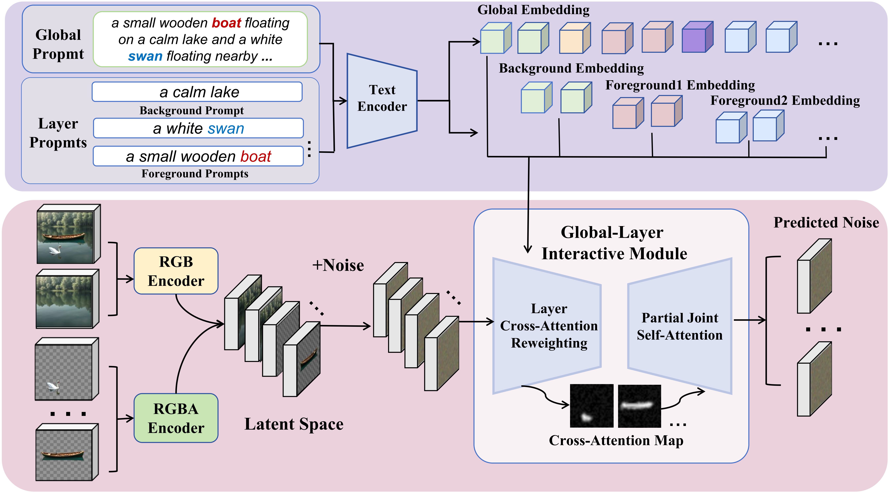
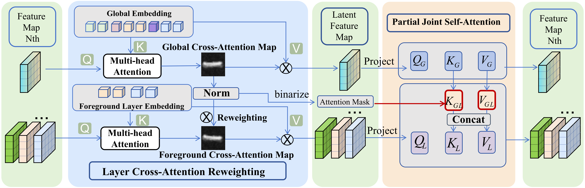
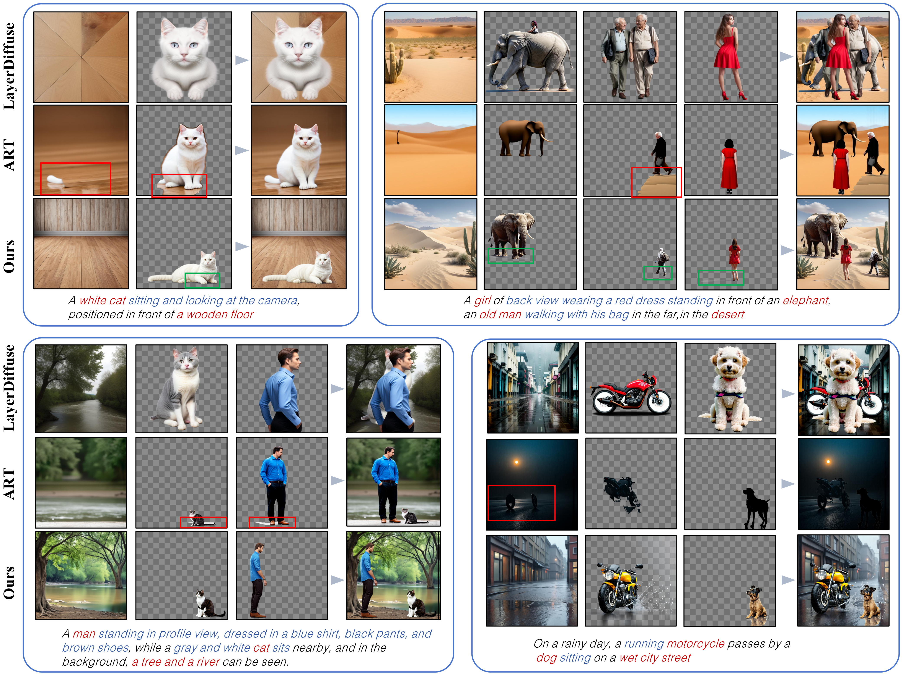

1Shanghai Jiao Tong University 2The Chinese University of Hong Kong
3Zhejiang University 4Shanghai AI Laboratory 5The University of Hong Kong
We present PSDiffusion, an end-to-end diffusion framework for simultaneous multi-layer image generation. Leveraging a global-layer interactive mechanism, our model generates layered images concurrently and collaboratively, ensuring not only high quality and completeness for each layer, but also spatial and visual interactions among layers for global coherence.
Transparent image layer generation plays a significant role in digital art and design workflows. Existing methods typically decompose transparent layers from a single RGB image using a set of tools or generate multiple transparent layers sequentially. Despite some promising results, these methods often limit their ability to model global layout, physically plausible interactions, and visual effects such as shadows and reflections with high alpha quality due to limited shared global context among layers.
To address this issue, we propose PSDiffusion, a unified diffusion framework that leverages image composition priors from pre-trained image diffusion model for simultaneous multi-layer text-to-image generation. Specifically, our method introduces a global layer interaction mechanism to generate layered images collaboratively, ensuring both individual layer quality and coherent spatial and visual relationships across layers.
We include extensive experiments on benchmark datasets to demonstrate that PSDiffusion is able to outperform existing methods in generating multi-layer images with plausible structure and enhanced visual fidelity.


Overview of our PSDiffusion. Our framework produces multi-layer images through three key components: (1) A transparent VAE encoder preserving alpha channels; (2) Layer cross-attention reweighting for layout plausibility; (3) Partial joint self-attention for inter-layer context modeling.

Overview of our global-layer interactive mechanism, composed of layer cross-attention reweighting module and partial joint self-attention module. Layer cross-attention reweighting module extracts the cross-attention map from the global branch to reweight the cross-attention map of the layer branch, guiding the position of foreground layers. Partial joint self-attention module implements a shared attention across global branch and layer branch to facilitate context-aware feature modeling.

@article{huang2025psdiffusion,
title={Psdiffusion: Harmonized multi-layer image generation via layout and appearance alignment},
author={Huang, Dingbang and Li, Wenbo and Zhao, Yifei and Pan, Xinyu and Wang, Chun and Zeng, Yanhong and Dai, Bo},
journal={arXiv preprint arXiv:2505.11468},
year={2025}
}